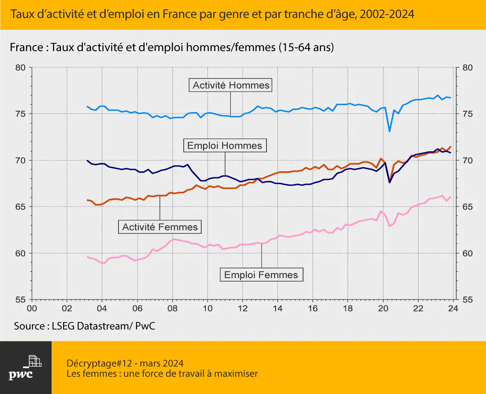
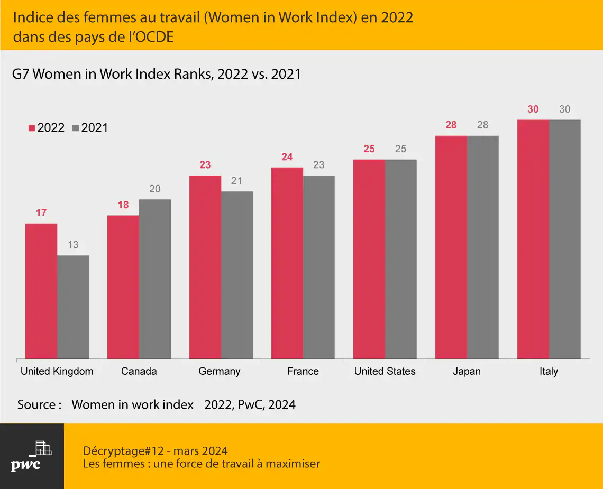
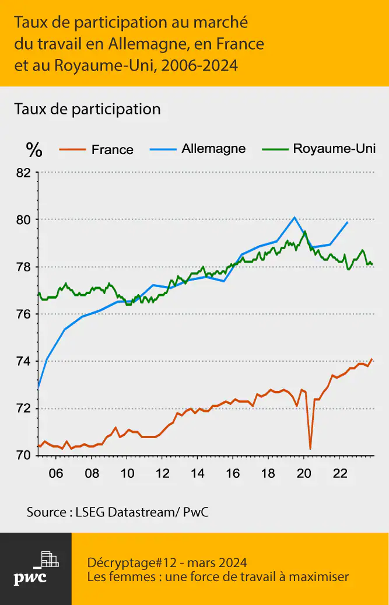

Statistiques Globales
70%
des femmes dans le monde ont subi une forme de violence au cours de leur vie.
59%
des diplômés universitaires sont des femmes, mais elles restent sous-représentées dans les postes de direction.
25%
des sièges parlementaires dans le monde sont occupés par des femmes.
Progression par Région
Découvrez les progrès réalisés dans différentes régions du monde :
Europe
- 35% de femmes dans les conseils d'administration des grandes entreprises.
- 95% des pays européens ont des lois sur l'égalité salariale.
Afrique
- 15% de femmes dans les postes ministériels.
- 60% des filles ont accès à une éducation primaire.
Asie
- 10% de réduction de l'écart salarial en une décennie.
- 50% des femmes participent maintenant à la main-d'œuvre.
Visualisation des Données
Ces graphiques illustrent les disparités et progrès en matière d'égalité des sexes :



Faites partie du Changement
Partagez ces informations pour sensibiliser votre entourage ou rejoignez une initiative pour promouvoir l'égalité des sexes.